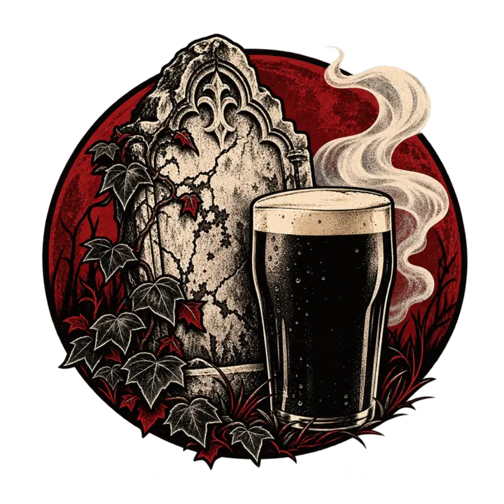

From the archiveThe Ghost of Annie King
It is most relieving to discover one descends from the criminally insane and the drunk. It explains a great deal.
Annie disappears from Dublin’s records and resurfaces across the Irish Sea: Liverpool, Manchester and eventually Wigan, glimpsed through Catholic registers and census returns, moving through some of the poorest communities in industrial England.